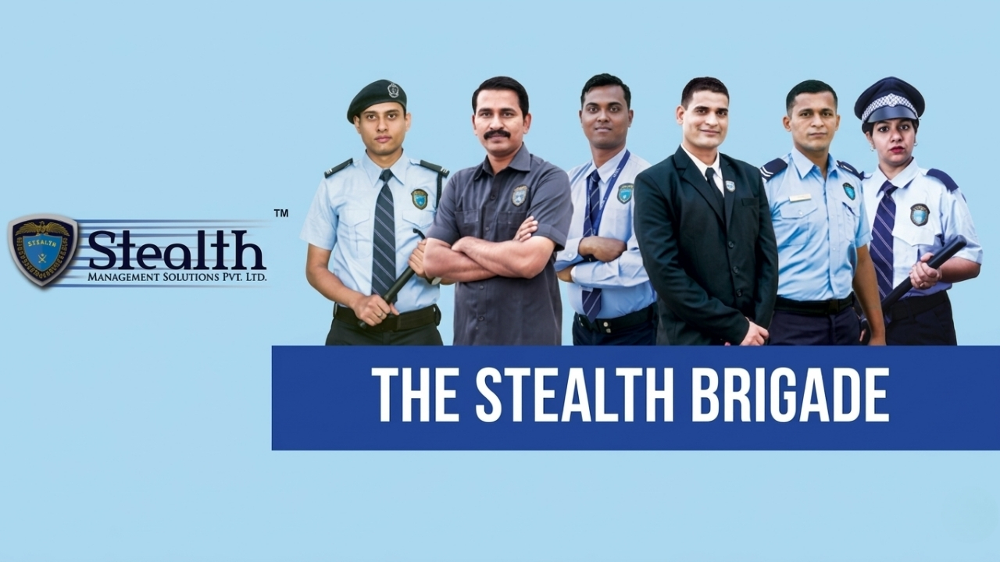

Case Studies

BVG India Limited
BVG India Limited transformed wage and payroll management for 90,000+ blue-collar employees with a fully automated HRMS software solution. By adopting KompassHR’s AI-powered payroll automation, the company ensured regulatory compliance, eliminated manual errors, and integrated real-time workflows nationwide. This upgrade boosted operational efficiency and delivered a transparent blue-collar workforce management solution at scale.

Ultra Corpotech
Ultra Corpotech centralized attendance and workforce data across 8+ manufacturing units by integrating biometric systems with KompassHR’s SaaS-based HRMS platform. The solution automated employee transfers, payroll processing, and historic data movement. With KompassHR, Ultra Corpotech achieved seamless workforce management, accurate one-click payroll, and error-free operations for both domestic and export manufacturing units.

Sara Logistics
Sara Logistics unified its global HR operations by deploying KompassHR – an AI-driven global HRMS platform with travel, claims, learning, performance management, and payroll modules. Through the Employee Self-Service portal, the company streamlined workforce management from Africa to the Middle East, enabling strategic HR planning, cross-border compliance, and transparent payroll operations across global locations.

Stealth Management
Stealth Management Solutions modernized security workforce operations by implementing KompassHR’s all-in-one HRMS for blue-collar and security staff. The solution automated payroll, visitor management, recruitment, guard touring, and CRM—replacing manual Excel-based processes. KompassHR delivered real-time efficiency, compliance, and seamless integration across mission-critical security functions, becoming a trusted partner for large commercial establishments.